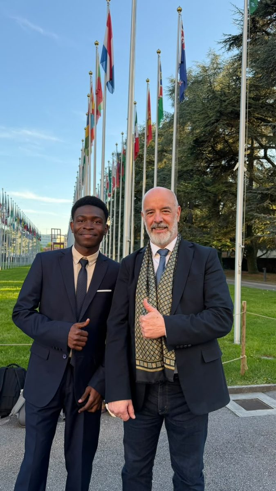
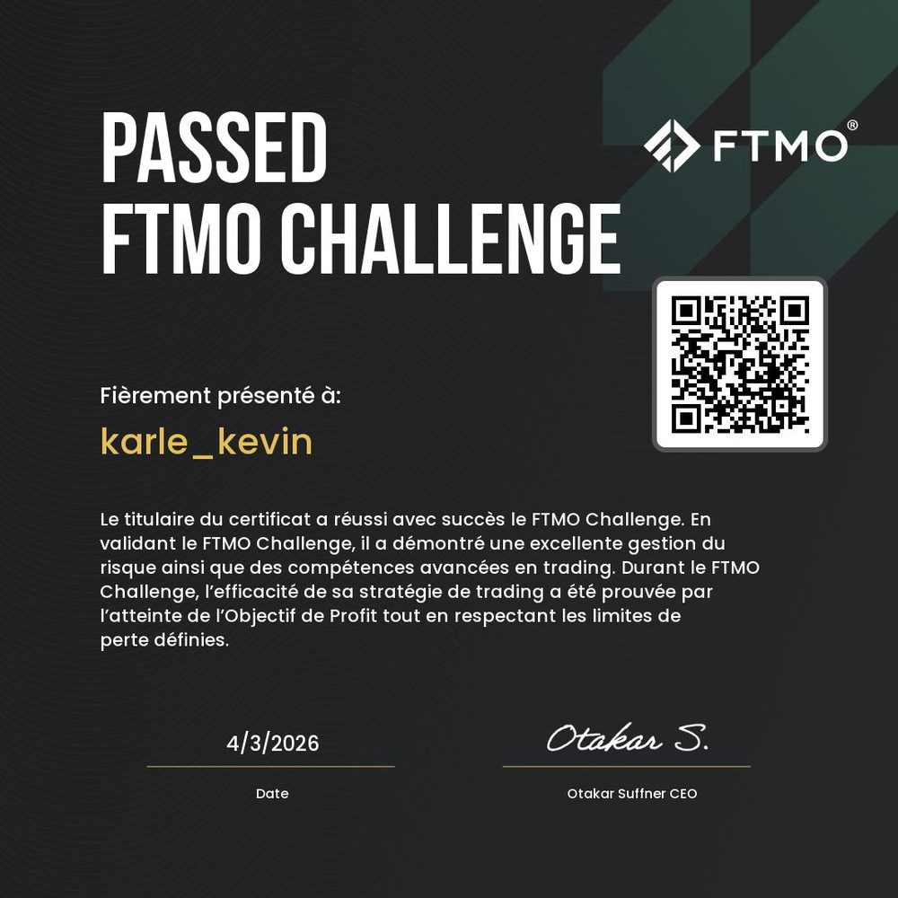
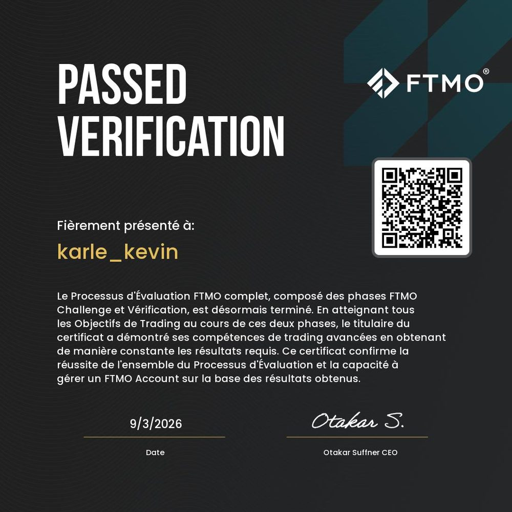
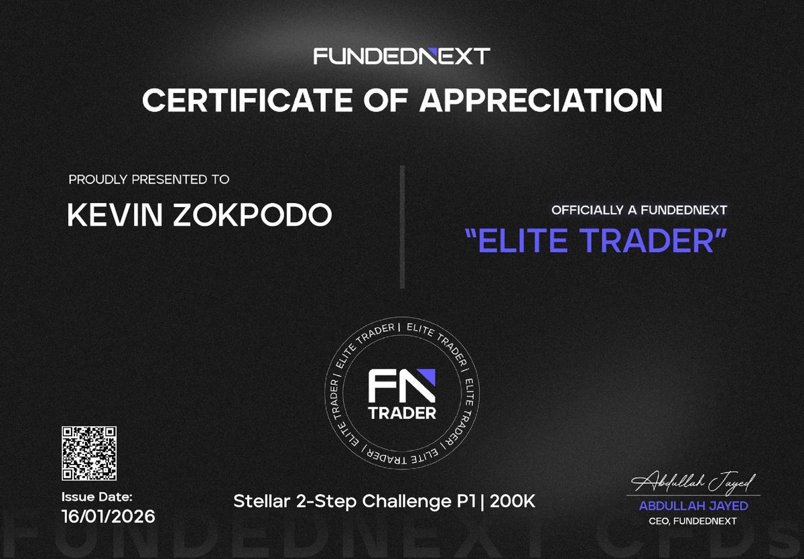
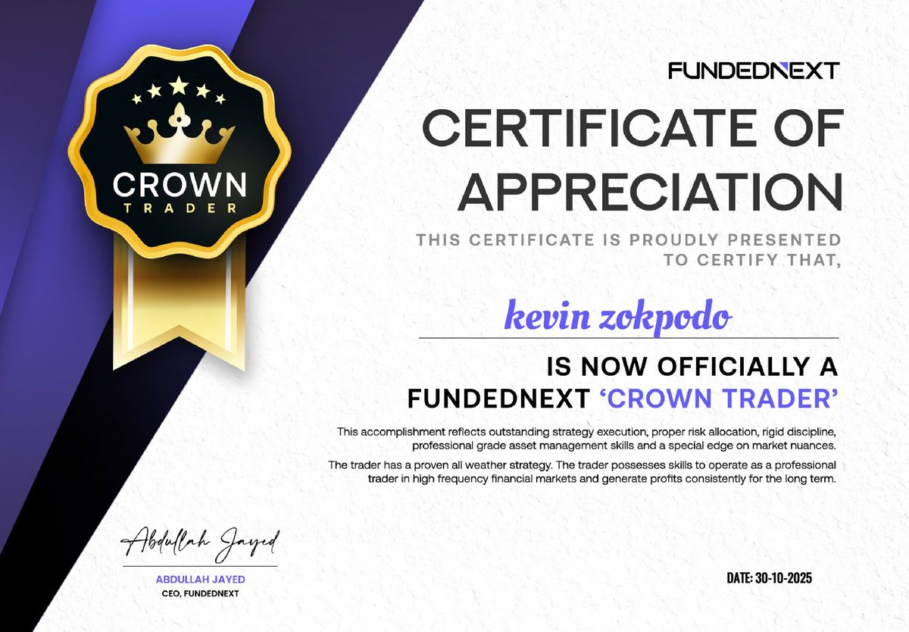

Master in Financial Engineering
Africa Business School — Mohammed VI Polytechnic University (UM6P)
Seeking a final-year Master’s internship (PFE)
Master in Financial Engineering — Africa Business School, UM6P · MBA in Business Analytics — Jindal Global Business School
I build models that turn market structure into decisions — from derivatives pricing and stochastic control to systematic strategies and multi-asset risk. Looking for a final-year Master’s internship (PFE) in quantitative research, trading or risk at a hedge fund or investment bank.
01 — About
I am a Master in Financial Engineering candidate at Africa Business School (Mohammed VI Polytechnic University) in Morocco, and I am reading in parallel for an MBA in Business Analytics at Jindal Global Business School in India. The two degrees are deliberate: one gives me the stochastic modelling and derivatives machinery, the other the data and decision-making side that turns a model into something an institution can actually act on.
My work sits where theory meets implementation. I am equally comfortable deriving a Hamilton–Jacobi–Bellman equation and shipping the code that prices or hedges against it, and I care as much about whether a model survives transaction costs and realistic frictions as about whether it is elegant. That discipline is also certified: I have cleared the full two-phase evaluations of FTMO and FundedNext, which test exactly one thing — hitting a target without ever breaching a drawdown or daily loss limit.
My research to date spans optimal portfolio allocation under stochastic volatility, the market-structure conditions required for a new index futures contract, AI-assisted macro analysis applied to systematic gold trading, and a quantitative development-policy model presented at the United Nations in Geneva. I am currently extending that work towards emerging-market sovereign risk and multi-asset stress testing.
I am looking for a final-year Master’s internship (PFE) in quantitative research, derivatives structuring or risk at a hedge fund or investment bank.
Africa Business School — Mohammed VI Polytechnic University (UM6P)
Jindal Global Business School (JGBS)
02 — Projects
Academic and independent work in derivatives, portfolio theory, market microstructure and risk. Each page carries an executive summary, the methodology, and the technical stack used.
An AI agent architecture that fuses macroeconomic intelligence with a systematic gold trading engine, translating rate expectations, real yields and risk sentiment into position sizing.
Optimal consumption and allocation when volatility is stochastic: deriving the HJB equation under the Jourdain–Sbai dynamics and solving it numerically against the constant-volatility benchmark.
Group research on the conditions under which a MASI 20 index futures contract could succeed on the Casablanca exchange: liquidity, contract design, hedging demand and the cost of carry.
First place at UNITAR, Geneva. A human-capital investment model that uses Monte Carlo simulation and panel regression to price the return on removing a child from the labour market.
Building a frontier-market sovereign yield curve and decomposing the country risk premium into its credit, currency and liquidity components.
A multi-asset stress-testing engine combining CoVaR-based systemic risk measurement with reverse stress testing to surface the scenarios that actually break a portfolio.
03 — Recognition
Selected for a UNITAR programme at the Palais des Nations in April 2025, where our team took first place for the presentation of a development-policy case built on quantitative foundations.

First place — team presentation UNITAR · Palais des Nations, Geneva
Bihar is one of the sharpest inequality problems in the world: caste exclusion has hardened into an economic trap where a child is worth more to a poor household as labour than as a student. Our team modelled that trade-off explicitly, and designed an intervention that pays a household exactly what the child's labour is worth — then proved the intervention could fund itself.
What made the case win was not the policy idea but the rigour underneath it: a Monte Carlo engine that stress-tested a twelve-year education path against economic shocks, a panel regression with fixed effects and an instrumental variable to defend the causal claim, and a unit-economics model showing the programme financed by exporting artisanal goods rather than by aid.

The team after the final presentation

The cohort at the Allée des Nations

With the programme faculty
04 — Credentials
Alongside the coursework, I have passed the full evaluation process of two proprietary trading firms. What these programmes test is exactly what a desk cares about: reaching a return objective while never breaching a maximum drawdown or a daily loss limit. Click any certificate to view it full size.

FTMO
Phase one of the FTMO evaluation: reaching the profit objective while respecting the defined maximum loss limits.
4 March 2026

FTMO
The complete two-phase evaluation cleared, confirming consistent results across both stages and eligibility to manage an FTMO account.
9 March 2026

FundedNext
Phase one cleared on the largest account size I have traded, awarded with Elite Trader status.
16 January 2026

FundedNext
The firm’s highest recognition tier, awarded for a proven all-weather strategy: consistent execution and risk allocation across changing market conditions.
30 October 2025
05 — Contact
Open to final-year Master’s internship (PFE) opportunities in quantitative research, trading and risk. The fastest way to reach me is email.